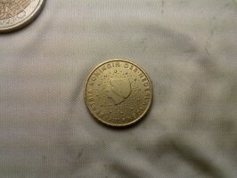
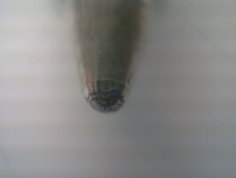
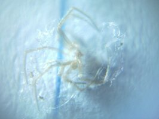

Heute bin ich im Internet über Anleitungen gestolpert wie man seine Handykamera zu einem Mikroskop umrüsten kann. Das geht so: man “ernte” die Linse eines Laserpointers (oder Türspions, oder CD-Players, oder sonst irgend eine Linse), klebe sie vor die Handykamera, fertig.
  Today, I stumbled across a description on how to turn your smartphone into a microscope. It’s pretty easy: “harvest” the lense of a laserpointer, or a peephole, or some arbitrary other lense, stick it in front of the phone’s camera, done.